Welcome to my diary! I'm Séléna and these are my travel notes...
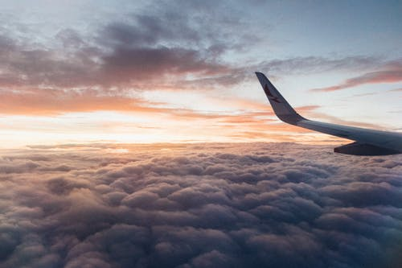In a nutshell, I grew up in an expatriate family and was raised in multiple countries. Here, I will share my experiences with you, the ups and downs of being an expat child and some tips on travelling that I learnt along the way. Enjoy reading !
Discover Le WagonAs soon as I turned six days young, I flew to Jamaica (Kingston) with my mother and father, who already lived there before my arrival. There, little me met Jean, the woman who would take care of me for the next six years of my life, and apparently, I instantly adored her. As the years passed and I grew older, I eventually attended the local school, where I would make great friends (who I am still in contact with). According to my parents, I preferred speaking english so much I refused to speak French at home and so no matter the language they would speak to me in, I would reply in English. In between the six years I lived in Jamaica, we flew to Guadeloupe twice and lived just under two years there. Jamaica is surely the country I'm the most attached to, as I lived there the longest.
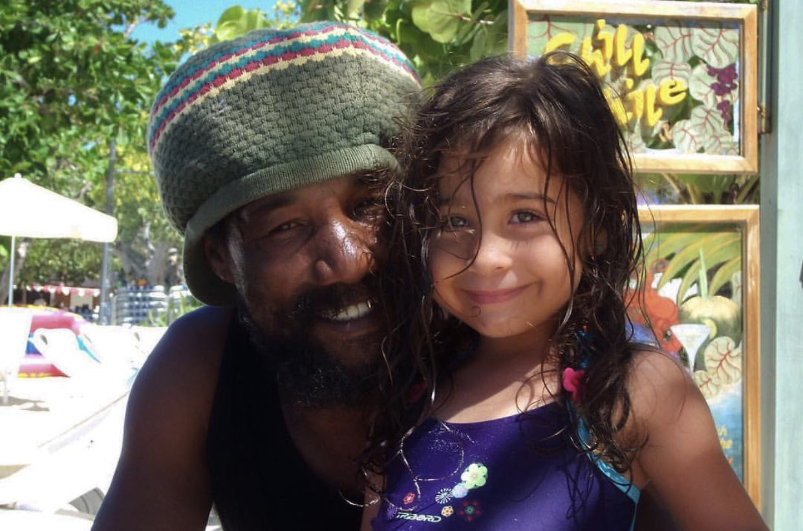 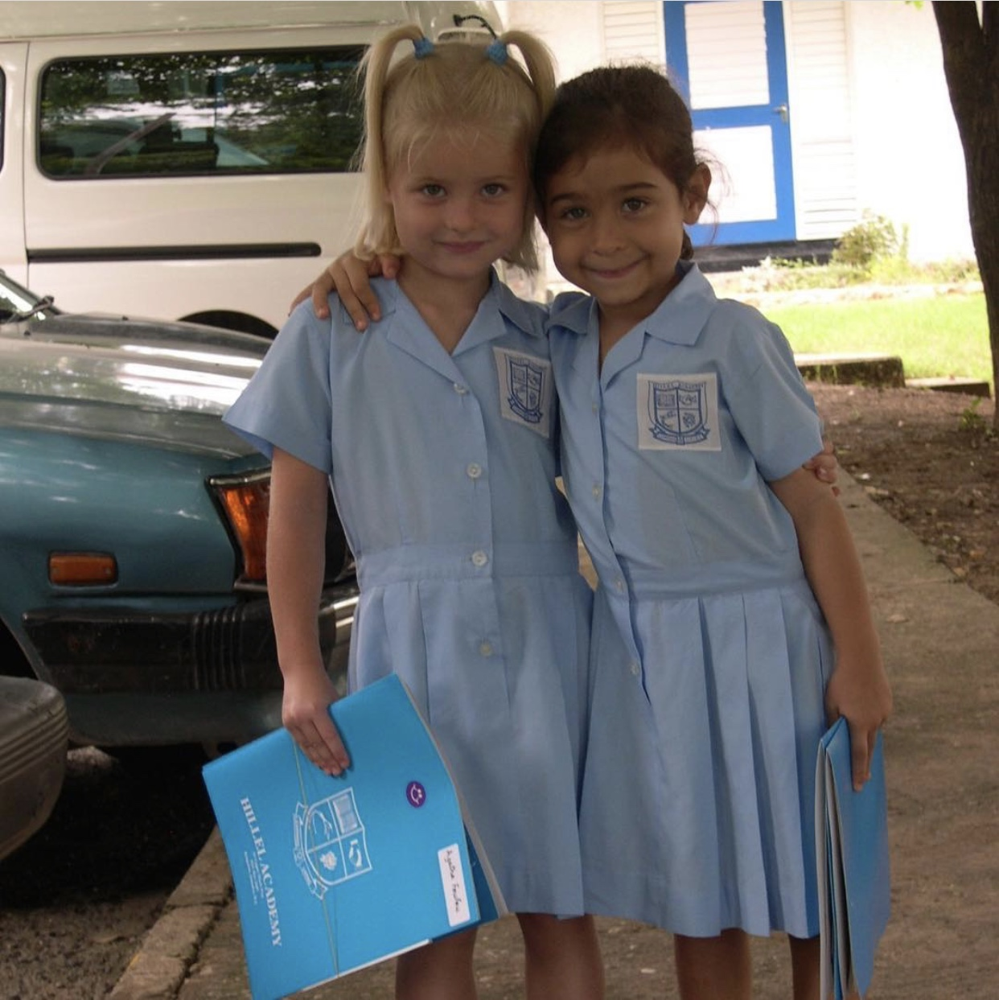After those beautiful years under the palm trees and the Caribbean sun, my family (that grew with the birth of my little sister, Alyzée) and I flew to Newcastle, in England. There, I also attended a local private school along with my little sister. We made British friends, however we were also in contact with other expatriate children, as my dad's collegues's kids attended the same school as us. In England, I discovered new sports, such as field hockey and cricket, which I very much enjoyed. We lived in Newcastle for four years, before moving to Ukraine.
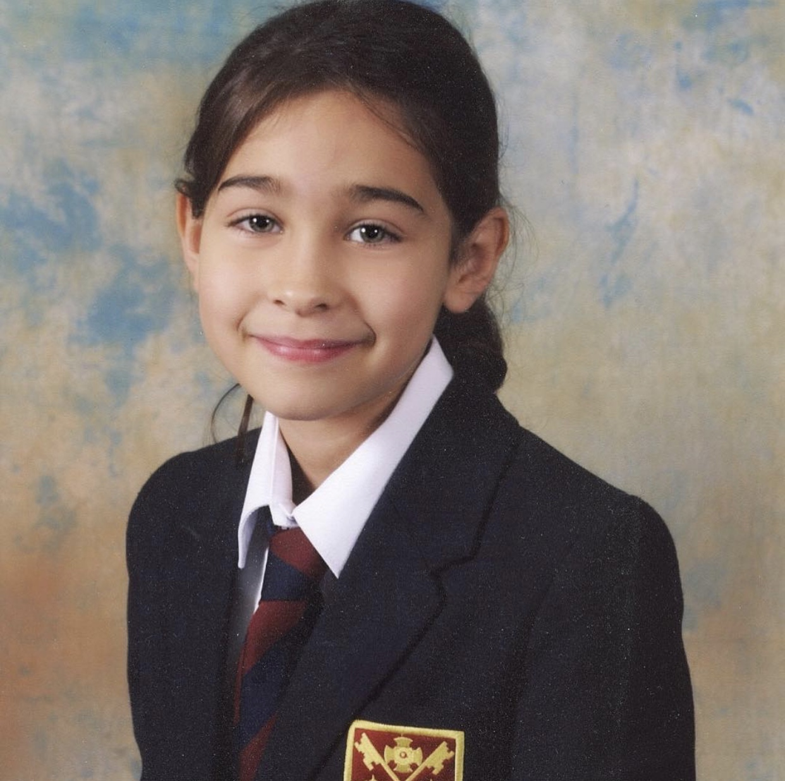Ukraine was a very "speacial" country in the sens that it was so different to anything I knew and had experienced before. Firstly, it's important to know that Ukaine is an Eastern European country that used to be part ot the Soviet Union and so Ukraine carries a strong and recent soviet heritage. As my dad had been sent to Ukraine for The Arch of Tchernobyl, we lived in a small village called Slavutich, that is located about two and a half hours away from the capital, Kiev. Slavutich was built in just under a year for the inhabitants of Tchernobyl and Pripyat after the nuclear disaster. Therefore, Slavutich wasn't a very fun place to live considering there was little infrastructure and it wasn't very modern. As there was no international, French or British school (only a Ukrainian school), my fathers' company had to improvise one for the expat children (we were about 10 all together, and our age ranged from 3 to 18). It was extremely difficult making friends in Ukraine as we didn't have much contact with locals, who were slightly reluctant to approching strangers, and of course there was the language barrier that I hadn't been faced with until now. Overall, I didn't enjoy Ukraine very much in the moment, however with time, I realised that it was a great country to live in and I was able to learn many things about myself, the country's history and people in general. It's also a beautiful country that has a variety of landscapes, and I was able to learn russian during the two years I lived there.
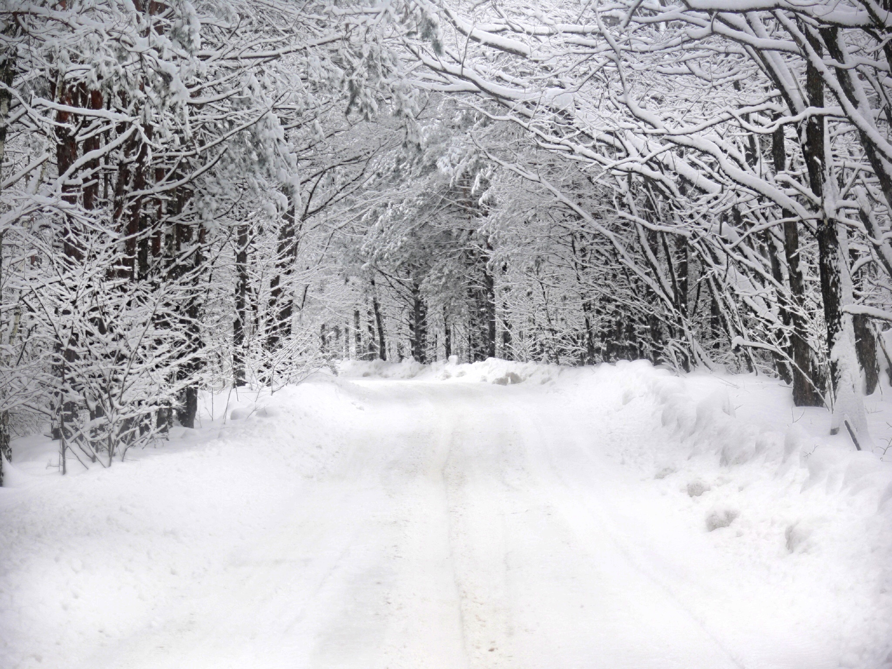 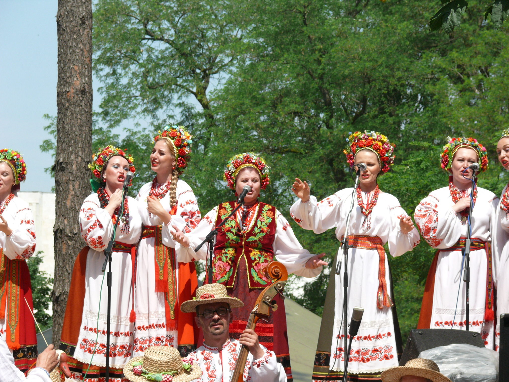As it was difficult for me to develop a good-enough social life, fully blossom and make the most of my teenage years; my family and I decided it would be best for me to go to boarding school in Edinburgh. Therefore, I moved to Scotland, where I made strong and wonderful lifelong friendships. I made terrific memories and I absolutely love and cherish my boarding experience.
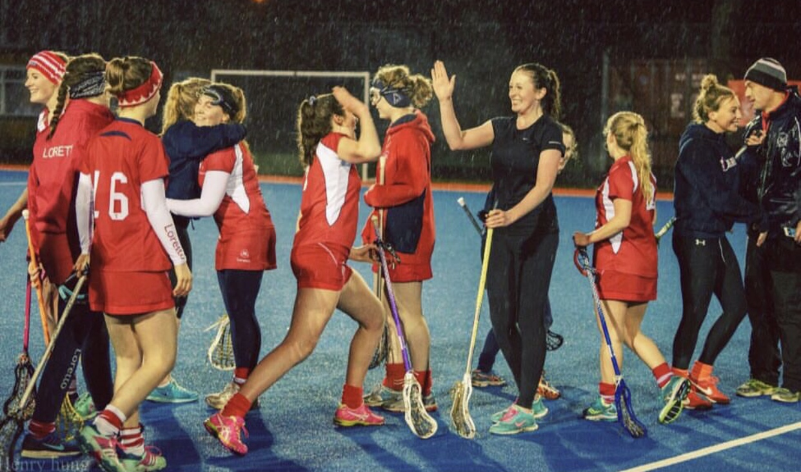 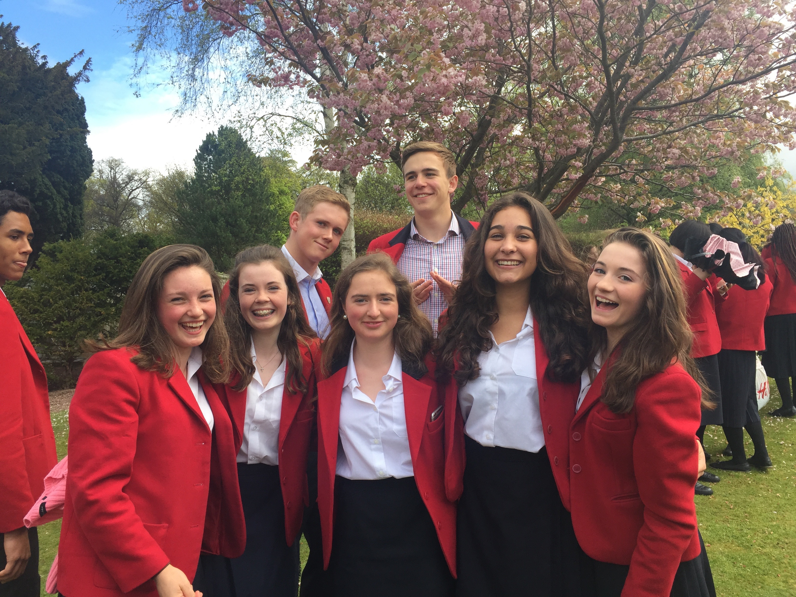After two years in Edinburgh, my family left Ukraine to move to Qatar, therefore I joined them there so we could be reunited. Qatar changed them a lot from Ukraine as it is almost the opposite of Ukraine in every aspects. As we had already visited the country during a family holiday a few years back, I knew what to expect. Qatar is a very modern, and almost superficial country. I enjoyed living there as many fun activities I previously considered to be special became part of my daily life: jet-skiing, yacht parties and quad riding in the desert. I spent two years in this excessively hot country before moving to France to live there for the first time in my life.
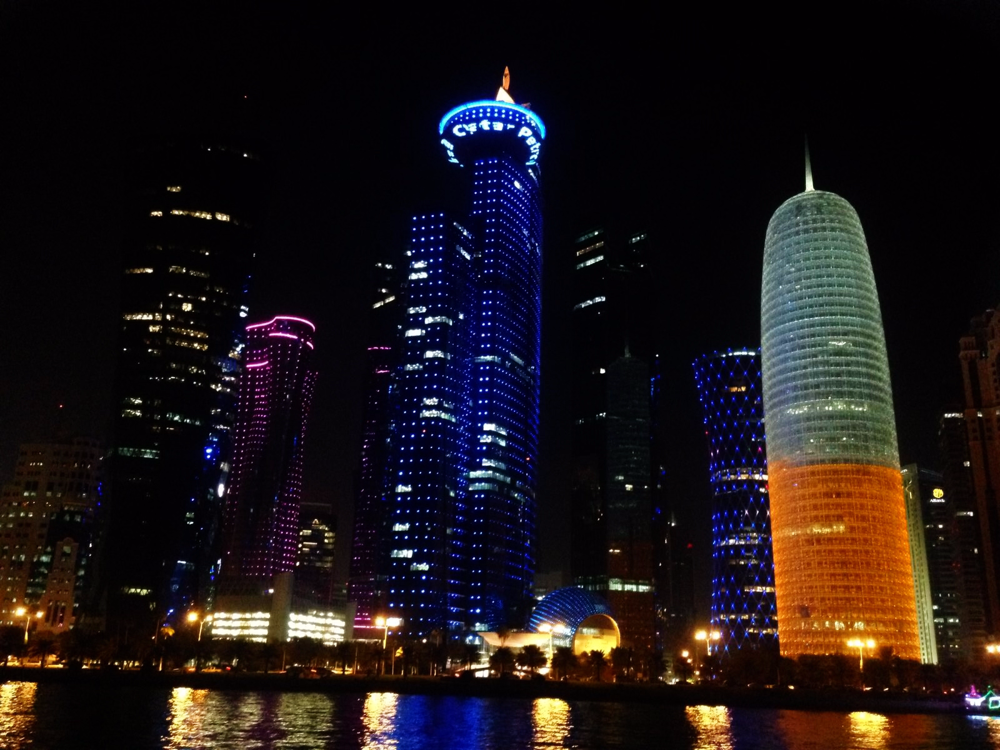 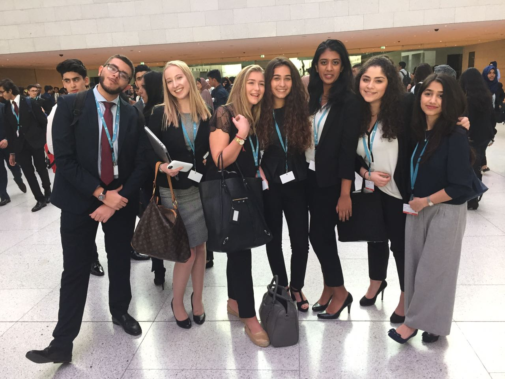The thought of moving to France for the first time was both terrifying and exciting. Even though I had been there countless amount of times and already knew Paris quite well, I felt like a stranger when I arrived with my family. To be honest, I actually feel like France was the hardest country to adapt to- although I can't quite fully explain this yet, I definetely feel like I wasn't welcomed as well as in other countries (even Ukraine!). However, I quickly got used to it and I have now developped a very strong conection with Paris and it has become a city close to my heart, that I'm attached to and know I will always be.
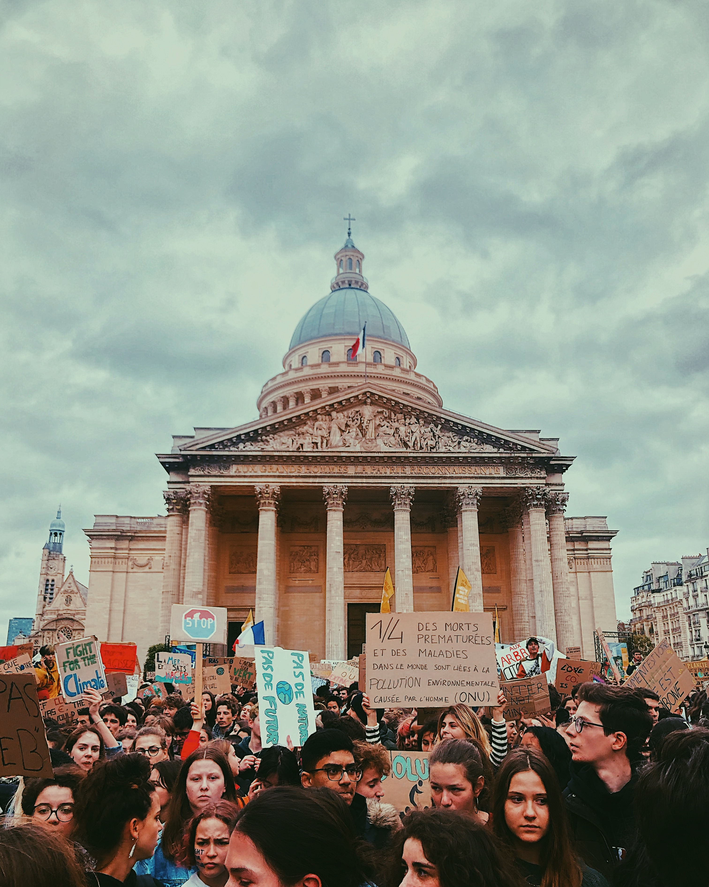 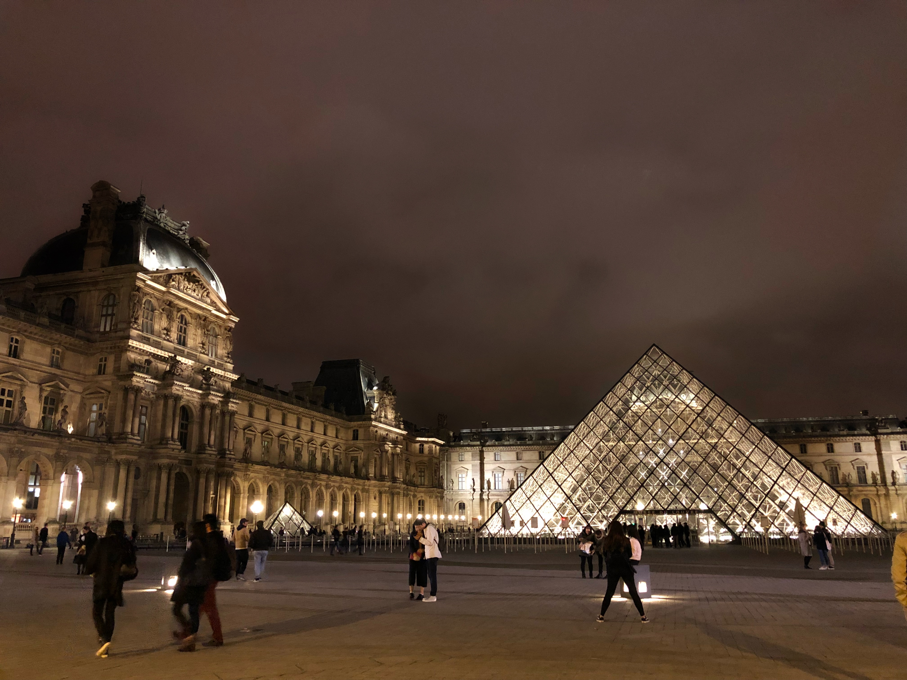Hello, I'm Séléna Quétu. I'm a French 19 year old from Paris, and I'm currently a business student at ESSEC.
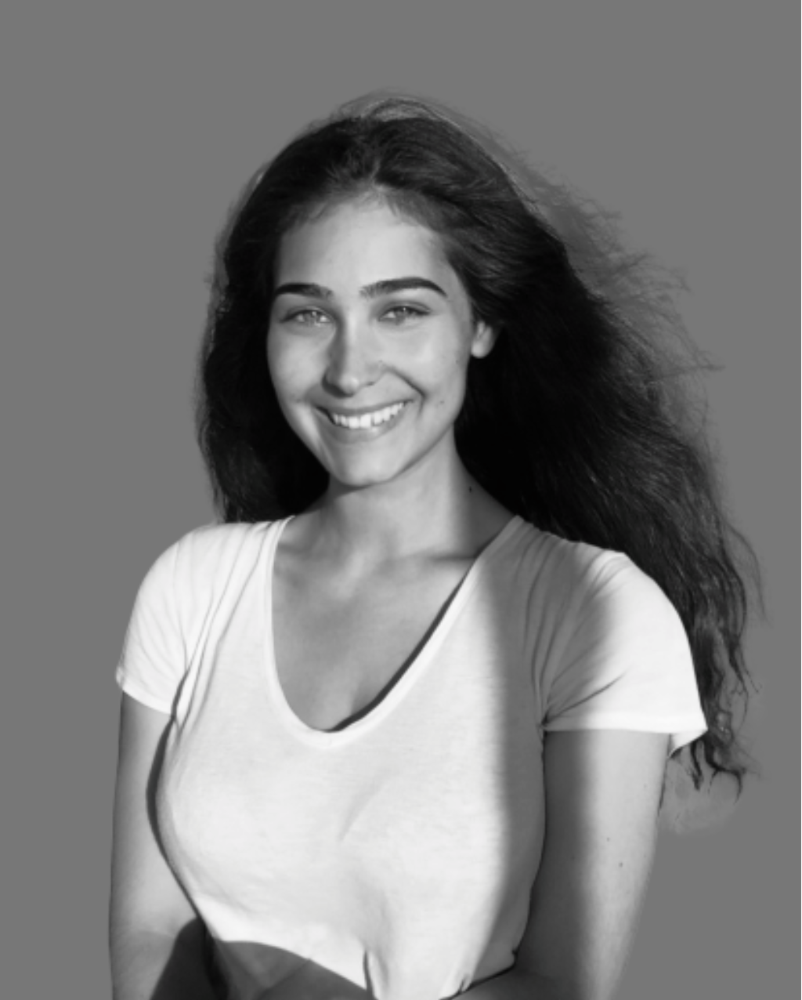As it wasn't easy carrying out the same activities in all the countries I lived in, my passions and interests haved changed along the years. However, some remain unchanged such as travelling (obviously!) and discovering new cultures and people. Apart from these, I enjoy swimming and horse-riding (my dad passed this passion on to me) and I used to love playing field hockey and lacrosse in Scotland. As well as doing sports, I enjoy going to the theatre (I love a good French Classical and tragical play such as Iphigénie by Racine). I'm also very passionate about politics and love to keep up with international news.